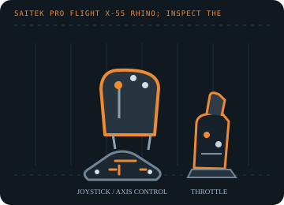

[ JOYSTICK CONTROLLERS // IDENTIFIED COMPONENT ]
Saitek Pro Flight X-55 Rhino H.O.T.A.S.
Separate stick and throttle USB units with pressure-sensitive configuration software, multiple hats and programmable flight controls.

MODEL IDENTIFICATION: Saitek Pro Flight X-55 Rhino; inspect the underside label for regional kit and hardware revision. Published family information does not establish the revision or condition of an individual unit; compare its label and included parts with the linked documentation.
Model specifications
| Catalog subcategory | Joystick controllers |
|---|---|
| Exact model / identifier | Saitek Pro Flight X-55 Rhino; inspect the underside label for regional kit and hardware revision. |
| Axes and buttons | Separate right/left-hand stick and throttle. Stick X/Y and twist axes, split throttle levers, analog mini-stick/rotaries, trigger, hats, switches and buttons; button/axis enumeration can differ by mode and driver. |
| Physical interface | Two independent USB connections (stick and throttle); USB joystick/HID input with separate device identities in many Windows games. |
| Sensors and protocol | Analog position axes and programmable button/hat events; Logitech/Saitek does not specify the sensor element for each axis in its support article. The X55 has no force-feedback actuator. |
| Power | USB bus-powered stick and throttle; use two direct host ports or a powered hub and avoid unpowered hubs when both units are connected. |
| Host OS and driver compatibility | Designed for Windows PC flight simulation. Basic USB enumeration depends on host HID support; the legacy Saitek programming software and game profiles are Windows-version dependent and may not install on current systems. |
Setup and calibration
Connect both units, verify the stick and throttle appear separately, and test each axis in the Windows Game Controllers panel. Assign ranges rather than button events to simulator axes; set dead zones only after checking for drift.
Keep the operating-system baseline calibration and in-game sensitivity/dead-zone settings separate. Record the OS, driver, firmware and game used to test each axis and button.
Preservation and service notes
Inspect the spring, gimbal return, friction adjusters, cable strain relief and detachable throttle connections. Save any working profile separately; do not assume old X55 profiles load unchanged in X56 software.
For an archive specimen, photograph the model label, note all included cables/adapters and distinguish directly observed behavior from published specifications.
References and support
- Saitek Pro Flight X-55 setup in Flight Simulator X — Logitech SupportManufacturer setup guidance for X55 stick/throttle axes and simulator assignments.
- X-55 Rhino H.O.T.A.S. System user manual — ManualsLibDigitized X55 manual; compare the included revision and control layout to the specimen.
Vendor support pages and manual downloads can change. Preserve the applicable manual and installer with a legacy host image, and verify the printed revision before service.